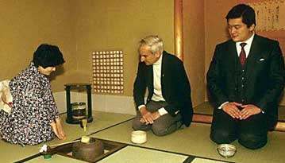
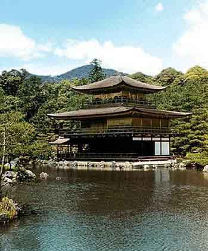
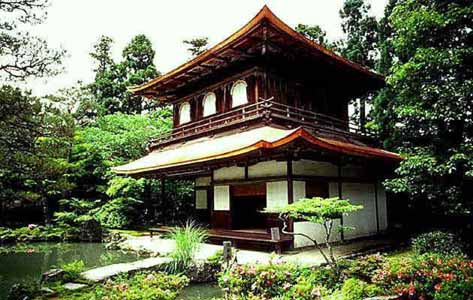

Tea ceremony
|  |
The development of the so-called tea ceremony (cha no yu) greatly influenced the development of Japanese culture . Originally emerged in Zen (Zen is a branch of Buddhism) monasteries, the custom of drinking for cheerfulness a rare drink brought from China - tea - in the XV-XVI centuries. became widespread in aristocratic and samurai circles. |
The strict ritual of cha no yu was developed by the Buddhist monk Murata Shuko under the shogun Ashikaga Yoshimasa (1449-1490). The ceremony was led by special tea masters (chajin), who gained great influence among the highest samurai, including representatives of the shogun, as well as the court aristocracy. The activities of such famous tea masters as Noami (XV century), Senno Rikyu (XVI century), Soami (XVI century), and later Furuta Oribe (XVII century), had a tremendous impact not only on the formation of the canons of the tea house. ceremony, but also the entire artistic culture of Japan.
|
Initially, the tea ceremony was held in a part of the living quarters fenced off by a screen. In the XV century. began to build separate small pavilions, reminiscent of a peasant hut with a four-pitched thatched roof. Austerity and ascetic simplicity were the main things that determined the external and internal appearance of the tea pavilion (chashitsu) - a wooden or bamboo frame with earthen or clay plaster, smooth, without decorations, plastered walls in calm tones, bamboo ceiling, small windows with latticed sliding frames, pasted over thick white paper. |
 |
The only decoration of the tea house was the tokonoma, in which a scroll of monochrome painting and a bouquet of flowers were placed, usually defining the main theme of the ceremony, its philosophical attitude.
An integral part of the tea house was a small and quiet garden - tianiwa , with dense vegetation, with paths of flat stones for secluded walks, with a stone lantern and stone vessels for water - tsukubai.
|
The earliest surviving tea pavilions are Kyoto's Togudo (1485), the Silver Pavilion (1489), the Saihoji Monastery (late 16th century). The famous Teien Garden in the Mokian Temple (near Kyoto), created in 1573 by Senno Rikyu, is considered the standard of chashitsu and chaniva. |
 |